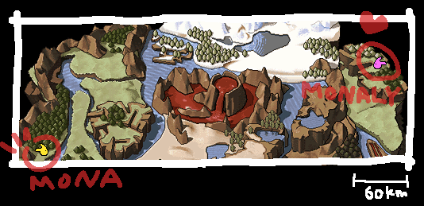

| 概要 | 情報 | ステージ攻略 |
| 地図 | テクニック | モナモナ攻略へ |
| 封印島について 地図の右下に「封印島」と書いてありますが、実は正確な位置が分かりません。 このMonarch^2の島全体が「封印島」なのかもしれませんし、全く地名のない島の どれかが「封印島」なのかもしれません。 ゲーム中には「封印島の宿命」というマップが前編と後編の2カ所あり、それぞれ、 「砂の街ポロッカ」と「ゴドゥ」要塞付近にあります。 この為、2カ所の島が「封印島」と考えることもできてしまい、何とも言えません。 管理人としては、何も地名が入っていない島のどれかが「封印島」だといいと思って います。 |
| モナ君の家 ゲームの第1面はエルード諸島付近だったので、管理人はモナ君もこの島のどこかの住人だと予想していました。 しかし、さん(なんと韓国のモナモナプレイヤーから!!)から、Falcom の公式サイトでダウンロードできる「おはなしスクリーンセーバー その1 -モナくんとUFO-」でモナ君とモナリィの位置がわかるという情報を頂きました。  上の画像が、そのスクリーンセイバーの画像なのですが、モナ君は「水道路」のちょっと下(南)に住んでいて、モナリィはジェダスの上にある島に住んでいるらしいです。さらに、さんの調査によるとモナ君とモナリィの家は直線距離で約364km だそうです。モナ君が「くじけそうなの」という理由も納得です。 最後に、さん情報提供ありがとうございます。このサイトではSHIFT-JISを使っているため、ハングルが使えないので画像で名前を表記させていただきました。 |
| 概要 | 情報 | ステージ攻略 |
| 地図 | テクニック | モナモナ攻略へ |